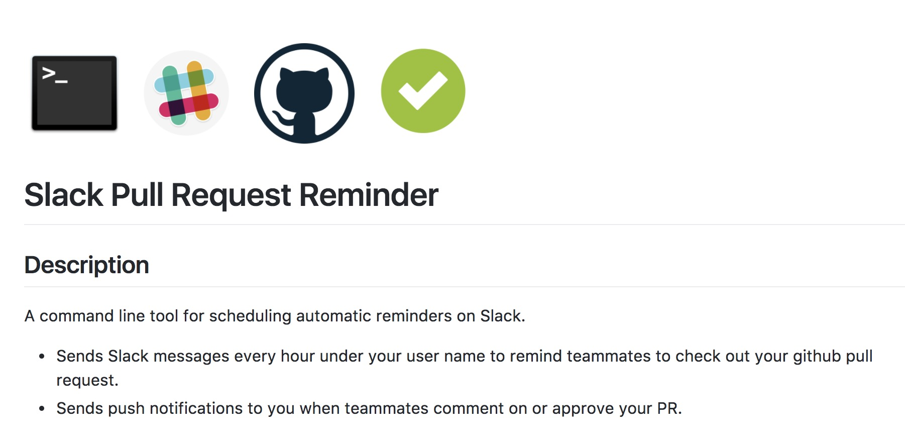

A Little About Me...
I'm a Software Engineer in Venice, CA where I get to work with great people. Right now, I'm dabbling in deep learning/machine learning and blockchain technologies like bitcoin, ethereum, and hyperledger fabric. In my day job I build and maintain numerous AWS hosted web applications/websites including howstuffworks.com and zoo.com using javascript and python.
Some Side Projects Of Mine...
Slack Reminder App
I made a nifty internal tool that reminds teammates ever hour to check out github pull requests. I used the Slack and Github APIs along with the node-notify package to get real-time status updates on a PR (comments, approvals etc) and send push notifications to you so you know when it's safe to merge your code.
Check the project out github: Slack Pull Request Reminder
Node Express Cluster Server Setup
For simple web apps, I like to load balance the workers on my servers by using Node's clusters. Doing so speeds up load times when multiple users are accessing the website at the same time.
Here is my usual node express server setup:
'use-strict';
var cluster = require('cluster');
if(cluster.isMaster) {
// initialize clusters on startup
var numWorkers = require('os').cpus().length;
console.log('Master cluster setting up ' + numWorkers + ' workers...');
for(var i = 0; i < numWorkers; i++) {
cluster.fork();
}
cluster.on('online', function(worker) {
console.log('Worker ' + worker.process.pid + ' is online');
});
cluster.on('exit', function(worker, code, signal) {
console.log('Worker ' + worker.process.pid + ' died with code: ' + code + ', and signal: ' + signal);
console.log('Starting a new worker');
cluster.fork();
});
} else {
// dependencies
// express
var express = require('express');
// middleware
var http = require('http');
var morgan = require('morgan');
var bodyParser = require('body-parser');
// instantiate express app
var app = express();
// use middleware
app.use(morgan('dev'));
app.use(express.static(__dirname));
app.use(bodyParser.urlencoded({extended: true}));
app.use(bodyParser.json());
// Routes
// NOTE: this is where all my routes go
// EXAMPLE:
// app.route('/content')
.get(function(request, response){
// do stuff
})
.post(function(request, response){
// do stuff
});
// create/run server
var PORT = process.env.PORT || 3000;
var server = http.createServer(app).listen(PORT);
console.log('listening on port '+PORT);
}
Restart Node Server Bash Script
I recently made a bash script to automate my server re-deploys. I use a node server for a few websites and I was getting tired of ssh-ing into my ec2 instances and running the same commands over and over whenever I made a change. So I just made this little script which I run by calling ./run_server.sh while ssh'd into the server. Deploying changes to my websites is now a breeze.
#!/bin/bash
# pulls most recent code from github (master)
git add .
git commit -m'pulling down new code'
git pull origin master
# finds the process ID for the running node server and kills it:
echo '1. pulled most recent code from git.\n2. restarting server...'
node_serverPID=($(ps -ef | grep 'node server.js'))
kill ${node_serverPID[1]}
echo 'killed node server process at:'
echo ${node_serverPID[1]}
# uses nohup to infinitely run the server in the background
# and logs the output logs to stdout.txt and stderr.txt
PORT=80 nohup node server.js > stdout.txt 2 > stderr.txt &
echo 'server now running indefinitely on port 80'